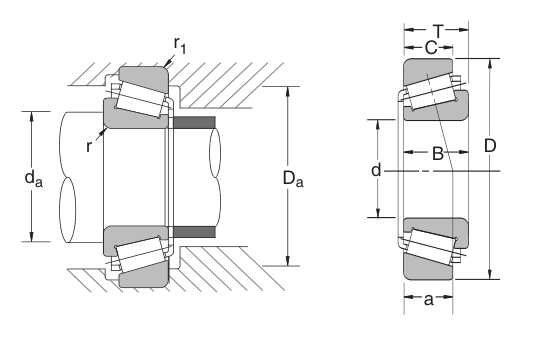

Original catalogue drawing - NSK catalogue, page 135

Scanned from the manufacturer catalogue page listing this part number. All part numbers printed on that table share the same drawing.
Scale cross-section
Blue = inner / outer ring, yellow = rolling element. Drawn to scale from this part's own
dimensions for selection reference only - not a manufacturing or assembly drawing.
Dimension table (mm / inch)
Symbol
Dimension
mm
inch
d
Bore diameter
38
1.4961
D
Outside diameter
63
2.4803
B
Inner-ring / bearing width
17
0.6693
T
Overall assembly width
17
0.6693
C
Cup / outer-ring width
13.5
0.5315
r
Chamfer (min)
3.556
0.14
Notes
Tapered roller bearings are cone / cup assemblies; cone and cup weights are listed separately and the total is their sum. Weights are given in kg. Load ratings are shown in both the original catalogue units and the converted value (1 N = 0.2248 lbf). Data is provided for selection reference only - confirm against the latest official catalogue before ordering.
Main dimensions
Bore d (mm)
38.000
Bore d (in)
1.4961
Outside dia. D (mm)
63.000
Outside dia. D (in)
2.4803
Width B (in)
0.6693
Overall width T (mm)
17.000
Overall width T (in)
0.6693
Cup width C (in)
0.5315
Load ratings & speeds
Basic dynamic load rating Cr (lbs)
8600
Basic static load rating Cor (lbs)
11700
Effective centre a (in)
0.57
Weight
Cone weight (kg)
0.132
Cup weight (kg)
0.059
Total weight (kg)
0.191
Mounting dimensions (fillets / shoulders)
Chamfer r (in)
0.14
Chamfer r1 (in)
0.05
Shaft shoulder da min (in)
2.20
Shaft shoulder da (in)
1.63
Housing shoulder Da (in)
2.41
Bearing life (ISO 281 basic rating life)
C / P
Equivalent load P (N)
L10 (106 rev)
L10h at 500 rpm
4
9,564
102
3,386
6
6,376
392
13,083
8
4,782
1,024
34,133
10
3,825
2,154
71,814
15
2,550
8,323
277,449
Basic rating life per ISO 281: L10 = (C/P)10/3 with C = 38,255 N. Hours = L10 x 106 / (60n). Life-modification factors for lubrication, contamination and temperature (aISO) are not included.
Source & traceability
Brand
NSK
Source catalogue
NSK inch product catalogue
Catalogue page
p.137 (dimensions) / p.138 (ratings)
Dimensions in inches and millimetres, load ratings in lbs.
Send us the quantity you need and we will come back with price and
lead time, normally within 24 hours. Equivalent parts from other brands can be quoted at the same time.